8:00 · morning
whether
Alarm apps
say when.
Mathaka
knows whether.
A reminder is not remembering.
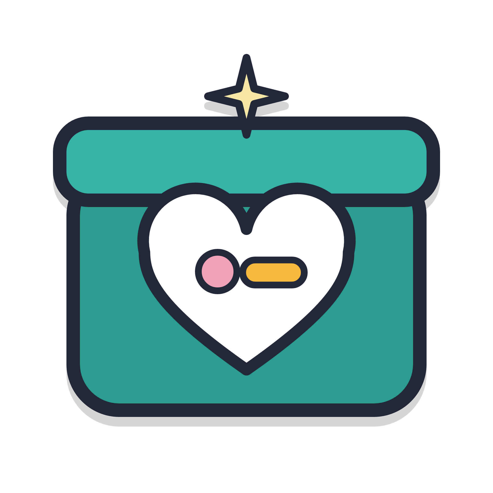
Mathaka
මතකය · memory
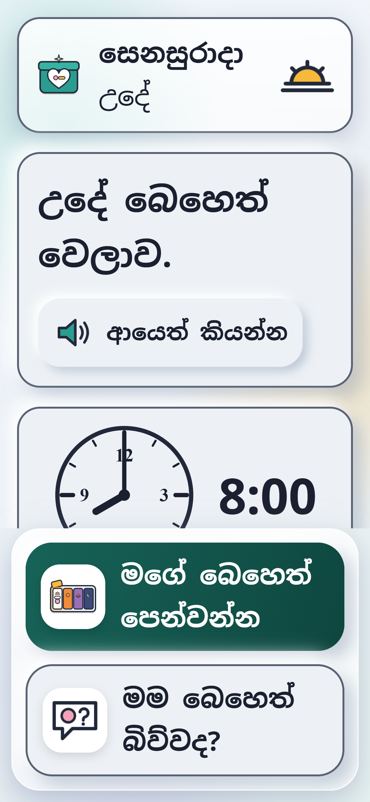
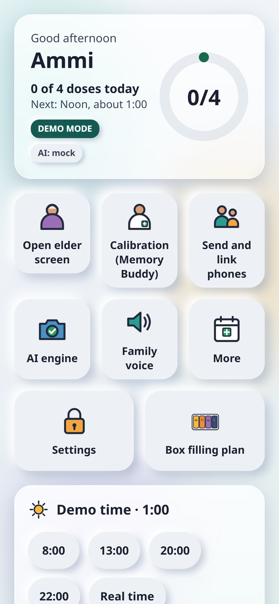
Elder phoneold, cheap Android · 3–4 GB
Family / Memory Buddyson · daughter · pharmacist
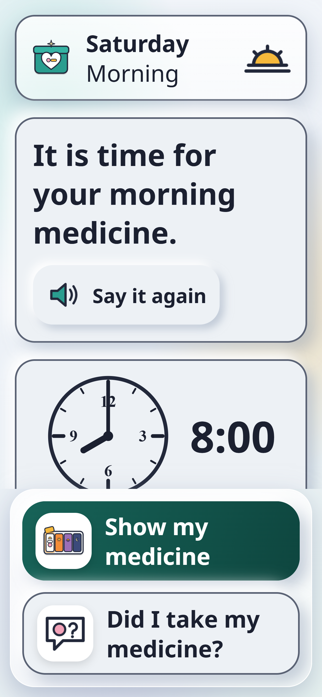
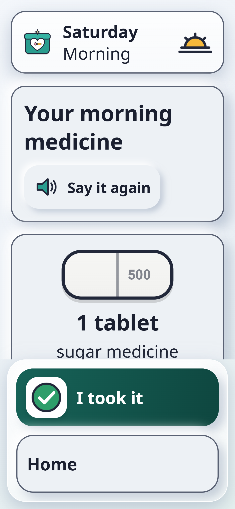
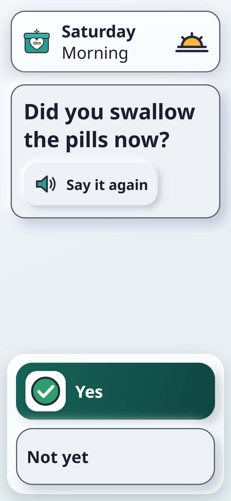
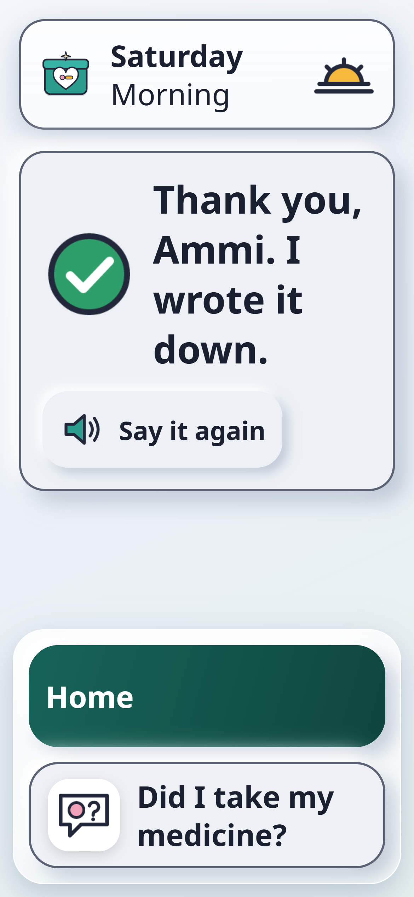
The elder phone
One gentle step at a time.
Only this slot's pills
Purpose, never a drug name
"Did you swallow them now?"
Written to the log
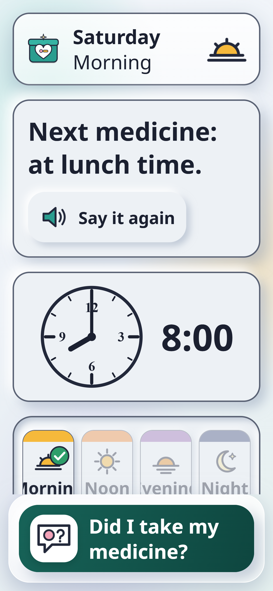
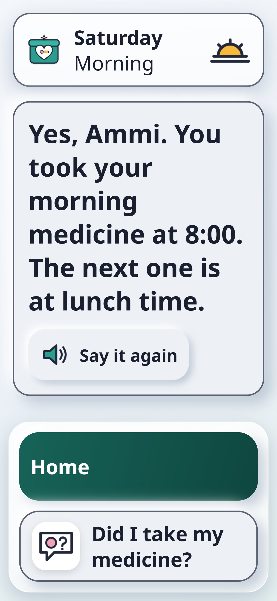
"Did I take my medicine?"
Answered from the log. Same calm words, every time.
DOUBLE-DOSE GUARD
Already taken at 8:00.
No second dose is logged.
No second dose is logged.
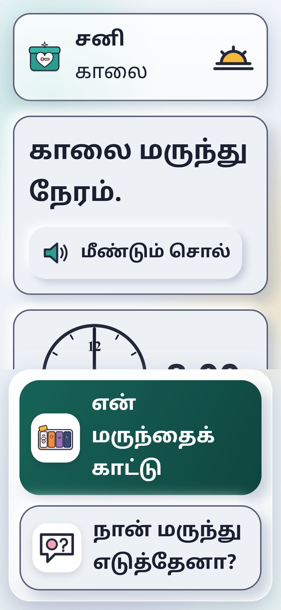
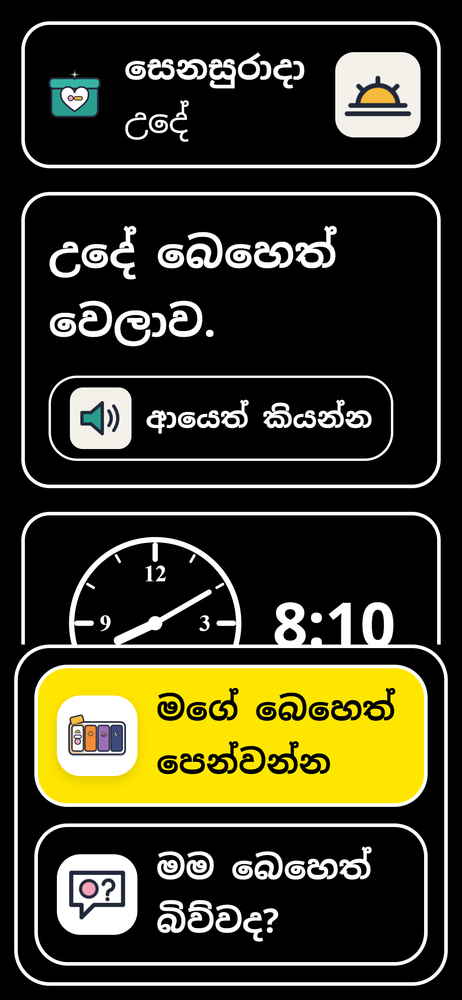
සිංහල · தமிழ் · English
7:1 contrast
Huge text
"Say it again"
No swipes, no double taps
Family voice
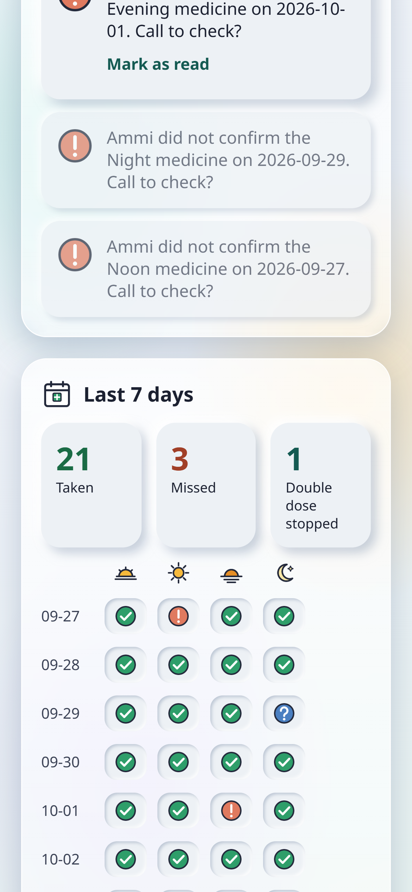

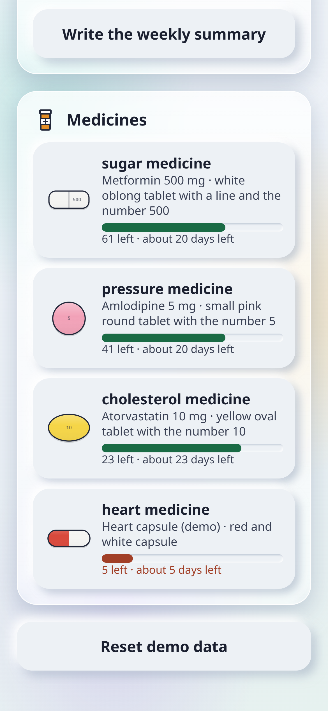
The family phone
The whole day, at a glance.
Doses taken today
Missed-dose alerts
Low stock · refill
Clinic date reminder
Fridge card on paper
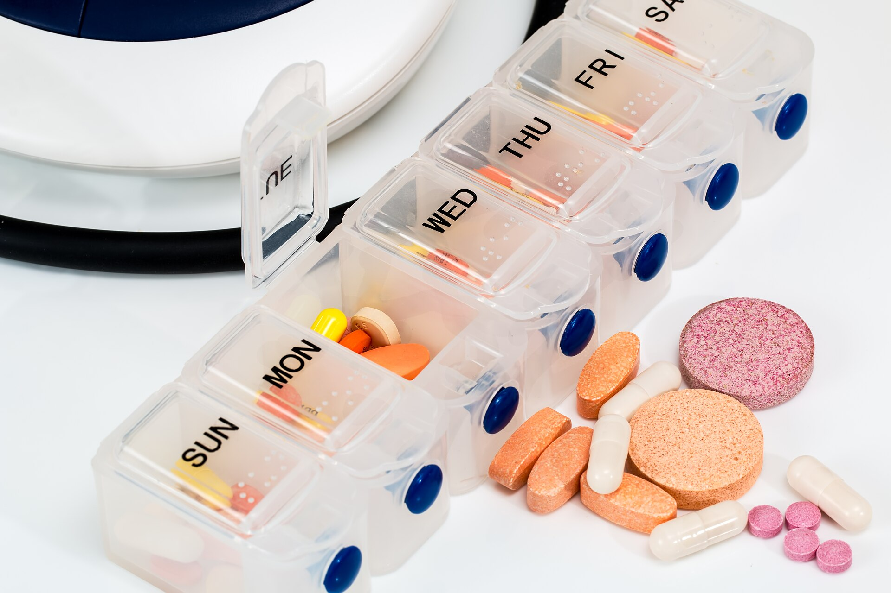
Heavy AI, once.
Light AI, every day.
No cloud. Anywhere.
1 · Setup, on the family phone
Gemma 3 reads the prescription. A person confirms every row.
Prescription photoclinic book · handwriting
→
Gemma 3 4B visionQ4_K_M GGUF · llama.rn · on device
→
JSON schemazod check · retry once
→
Human confirmsrow by row · nothing used before
Pill imprint"500" read from the photo
→
Plain descriptionfor the family
→
Weekly summarycounted facts only
2 · Pill vision in plain TypeScript
Measured, not guessed.
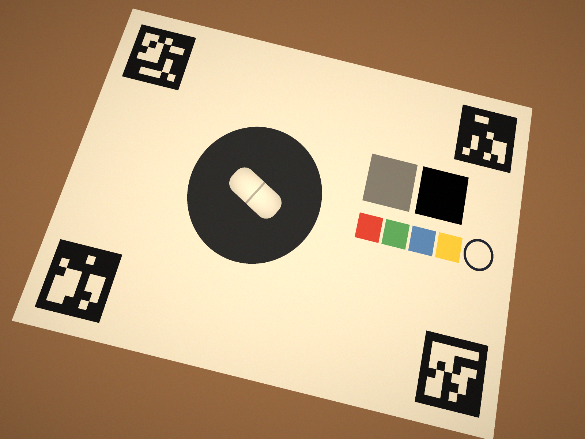
photo · 4 ArUco markers→
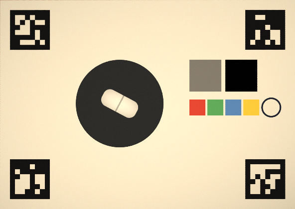
homography · 4 px/mm→
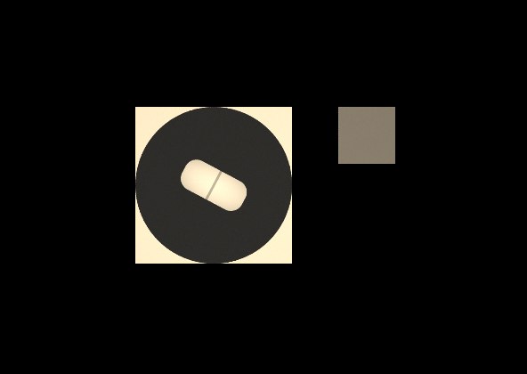
grey-patch balance · segmentoblong · white · score line
0 × 0 mm
~200 ms · same code on phone, browser, tests
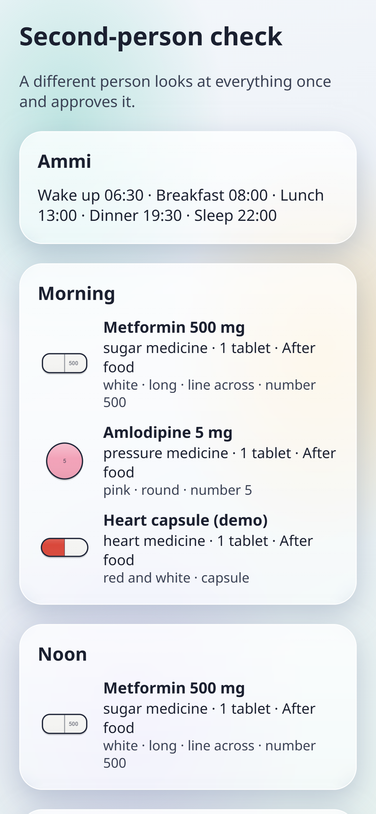
3 · One file, checked twice
A second person approves. Then one file travels.
mathaka-calibration-v1.mtk
manifest.json SHA-256 per file
data.json elder · medicines · schedule
photos/ · voice/
Bluetooth
USB cable
WhatsApp to yourself
rejects: broken · changed · older · unapproved
4 · The AI that is not allowed to speak
"mama beheth biwwada?"Singlish, spoken
→
Layanon-generative · picks 1 of <20
→
intent = did_i_takeonly if p ≥ 0.85 · else ask family
→
Fixed templatesi · ta · en · facts from the log
No model ever writes words for Ammi.
5 · Alerts without a cloud
When a dose is missed, the family knows.
1
Home Wi-FiTCP :8790 · paired once by QR
2
Plain SMSSmsManager · no mobile data
3
Retrypending → background task ≥15 min
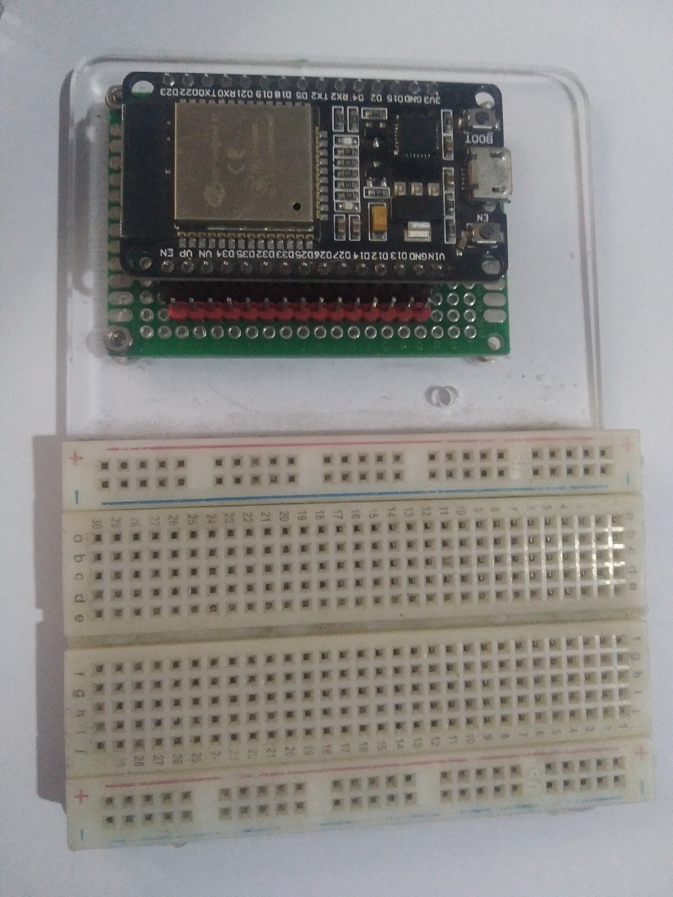
6 · Arduino pill box (optional)
The lit slot is due. Press it: "I took it".
morning
noon
evening
night
→ LIGHT 1 ← PRESS 1 ← LID 2 OPEN
BLE + USB serial · Wokwi simulator
BLE + USB serial · Wokwi simulator
The box never decides. Same double-dose guard.
Frozen test sets · eval/report.md
0/40
"Did I take it?" answers
0/4
double doses stopped
0
unsafe sentences
So Laya stays off. Ammi keeps her big buttons.
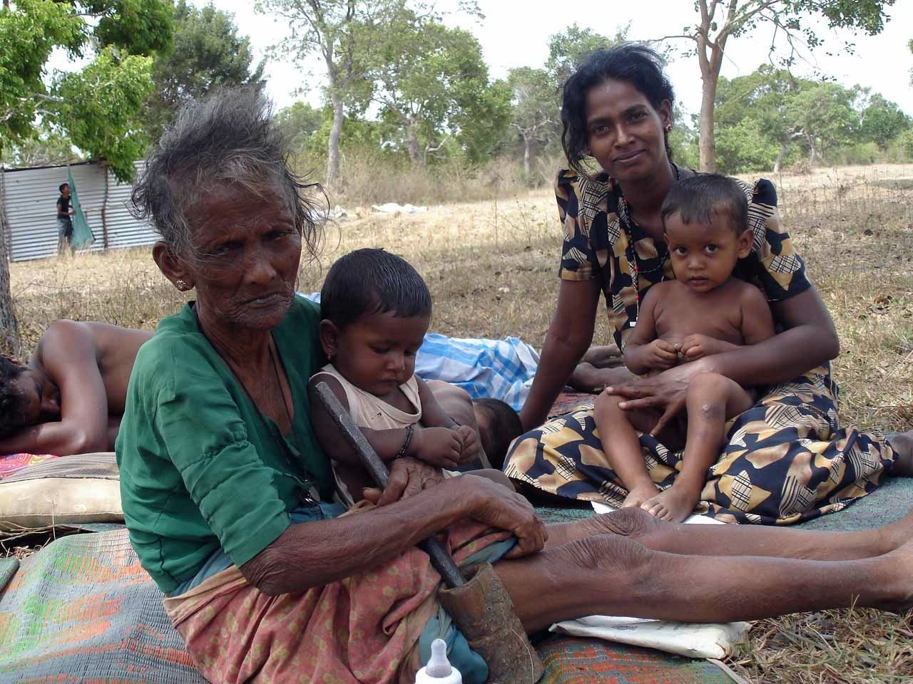
Mathaka remembers.
Gemma 3 · on device
Arduino · ESP32
Open source · Apache-2.0
Not a medical device. It does not replace a carer. · Photos: Wikimedia Commons (Ayena PD, Stevepb CC0, trokilinochchi CC BY 2.0, Edwiyanto CC BY-SA 4.0)